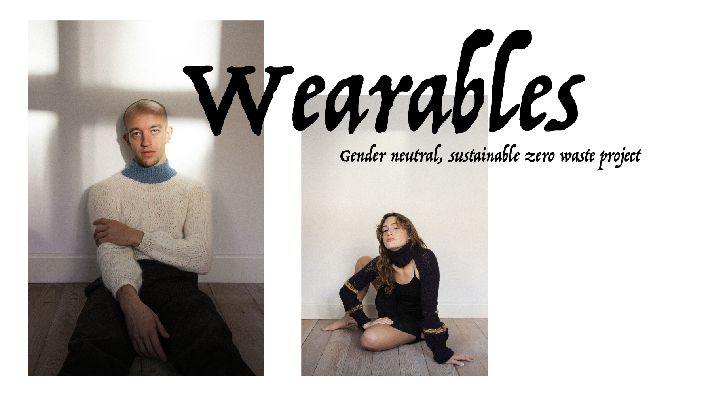
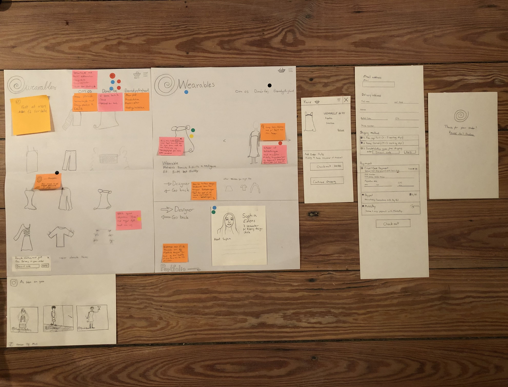
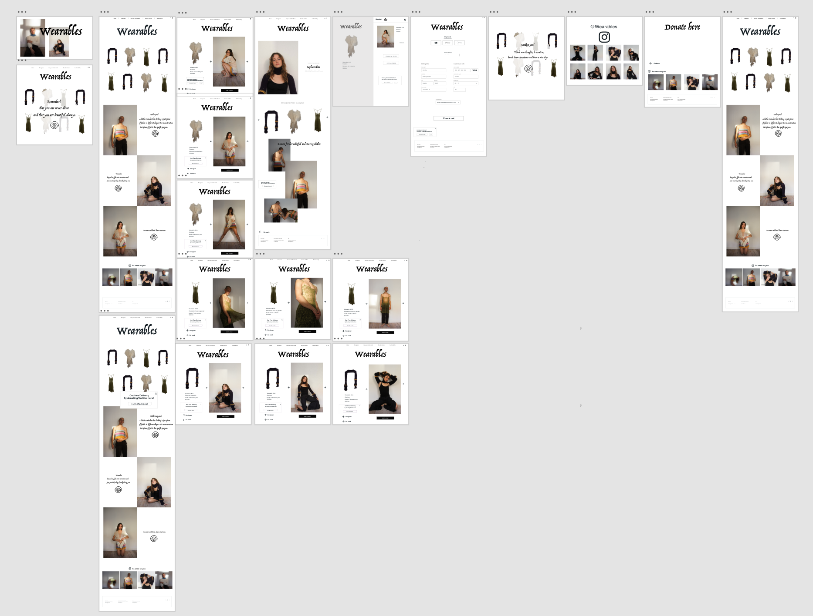
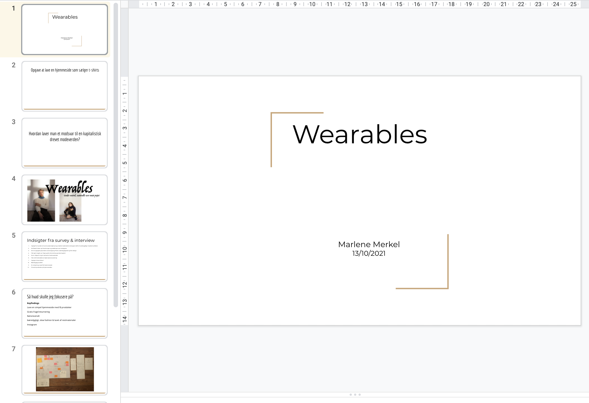
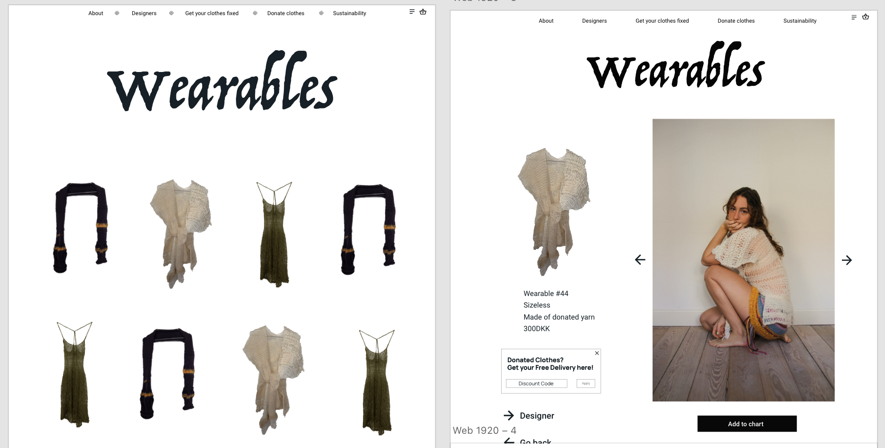
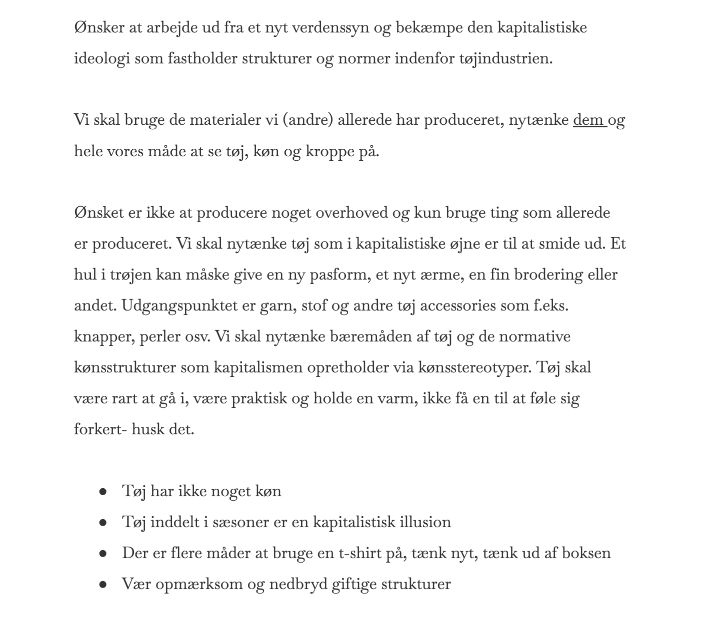

UX forløbet har givet mig en grundlæggende forståelse for samspillet mellem brugere og brugergrænseflader, samt hvilke teorier, værktøjer og metoder du kan benytte til research, design og test i en digital produktudvikling. Forståelse for dette samspil er vigtigt idet at designvalg og produktudvikling baseres på konkrete indsigter om reelle brugere i stedet for diffuse mavefornemmelser og umiddelbare antagelser. Det har give mig erfaring med udvalgte UX-metoder samt at lære dig, hvordan du præsenterer dit produkt, samt formidler dine research- og testresultater for interessenter.
UX
01.Opgave
I forløbet 03-UX skulle jeg produktudvikle en prototype i XD baseret på udvalgte ux-metoder. Jeg udviklede et koncept som skulle have en hjemmeside. Derudover lød opgaven på at kunne formidle og præsentere sin research og slutprodukt samt testresultater for interessenter. Formålet var at få en grundlæggende forståelse mellem brugere og brugergrænseflader samt kendskab til metoder til research og test, værktøjer til design og digital produktudvikling. Benspændet var at hjemmesiden skulle sælge t-shirts og 2-3 andre produkter enten som en del af et merch, en kollektion eller brand.
02.Research

Jeg lavede et koncept som skulle være bæredygtigt, kønsneutralt, genbrug og et forsøg på at være antikapitalistisk. Herefter gik jeg igang med at researche konkurrenter, andre virksomheder samt målgruppen. Jeg lavede deskresearch hvor jeg kiggede på andre vintage og bæredygtigheds bevidste hjemmesider. Jeg lavede et survey og et interview for at undersøge brugernes adfærd med hensyn til online handel og bæredygtighed. Mine key findings ud fra research var følgende:
OBS! konkluderet ud fra survey og interview.
- Lave en simpel hjemmeside med få produkter
- Gratis fragt/returnering
- Kønsneutralt
- bæredygtigt, slow fashion & lavet af restmaterialer
03.Ideudvikling
Gik i gang med idefasen ved at jeg lavede lightning demos (finde en masse inspiration fra nettet, “stjæle” fra andre sider), Sketch- ideas, crazy 8’s og solution sketch. Da jeg synes at have fundet frem til nogle fede ideer og ui-elementer havde vi et art museum på skolen hvor man fik kritik og inspiration fra de andre i forhold til andre ting man kunne implementere. Jeg udarbejde den første prototype i XD lavede moodboard og et xd-library så jeg nemt kunne ændre ting i prototypen hvis jeg ombestemte mig. Jeg udarbejdede Ui elementer, tagline, copy og microcopy til prototypen. Kameraet blev hevet frem og jeg tog nogle billeder som jeg redigerede ud fra et moodboard med inspiration til redigeringen af billederne. Tekst og billeder blev implementeret i prototypen hvorefter den blev testet.
04.Test
Jeg testede prototypen ved hjælp af the five act interview, hvor en testperson tester prototypen og samtidig besvarer udarbejdede spørgsmål som man stiller. Jeg kunne konkludere: Jeg skal have gjort mit koncept mere klart for brugeren. Konceptet skal være klart på forsiden. Derudover observerede jeg at mange testpersoner ikke scrollede ned på hjemmesiden, jeg skal derfor have gjort noget ved lysten til at scrolle på sitet. Man må ikke komme i tvivl om det er mande og kvinde kollektioner, evt nye billeder på forsiden så kunden forstår at det er et kønsneutralt brand. Logoet skal få en tilbage til forsiden. Testpersonerne kunne godt lide enkeltheden af hjemmesiden.
05. Pitch
I min pitch skulle jeg samle al den information fra research og test delen og drage en konklusion samt forbedre prototypen ud fra de resultater jeg kom frem til. Jeg tog udgangspunkt i mine keyfindigs som var dem der oftest gik igen i brugerundersøgelsen og udarbejdede nogle løsninger på baggrund af den læring om brugeradfærd, UI-elementer og salgstricks. Jeg kom frem til følgende konklusioner:
- Lave en simpel hjemmeside med få produkter- flyvende tøj, ikke så mange produkter
- Få men gode og bæredygtige dvs. langtidsholdbare produkter unikke så man passer bedre på dem
- Gratis fragt/returnering- ved at man donerer tøj til firmaet
- Kønsneutralt- ved ikke at lave mande eller kvinde sektioner og vise hvordan tøjet ser ud på de forskellige kroppe vi alle har
- bæredygtigt, slow fashion & lavet af restmaterialer- brugt min venindes design til at illustrere eksempler på noget tøj
- Instagram- lavet en “as seen on you” nederst på side
Herefter viste jeg den endelige prototype og kom ind på de svar og refleksioner jeg havde fået fra at udføre testen (kan læses i ovenstående afsnit). Havde jeg haft mere tid havde jeg arbejdet videre mit visuelle udtryk f.eks. farver, flere billeder samt lavet flere interaktive knapper. Jeg ville gerne have haft mere tid til f.eks. at komme på flere løsninger på hvordan man kan lave flere slags tricks som modarbejder kapitalismen eller i hvert fald ikke gavner den (ikke få kunderne til at købe tøj de ikke har brug for, men stadig få dem til at købe, støtte et godt formål) ved at lave mere research og tests. De andres pitch gav mit flere ideer til hvad jeg kunne ændre på min egen hjemmeside eks. flere knapper, menupunkterne og copy/microcopy ideer til produkterne.
06.Links
07.Challenges
Det var udfordrende selv at skulle komme på et koncept og en virksomhed. Det er altid sværere at lave survey og interviewspørgsmål man lige tror da man skal passe på ikke at gøre dem for ledende men heller ikke for åbne. Jeg ville utrolig gerne have fordybet mig mere i et forsøg på at gøre en hjemmeside så vidt som muligt antikapitalistisk.
08.Hvad har jeg lært?

At arbejde dokumenteret og iderigt, indsamle data og lave test som jeg benytter til at lave forbedringer af produktet. Fået en forståelse af virksomheders salgstricks på hjemmesider. Gøre den viden og de beslutninger jeg har taget spiselige for interessenter så de kan se hvordan og hvorfor jeg er kommet fra a til b. Pitche foran mennesker og tage kritikken til mig.
- UX
- UI
- Survey
- Sprint
- Salgstricks
- Copy/microcopy
- Photoshop